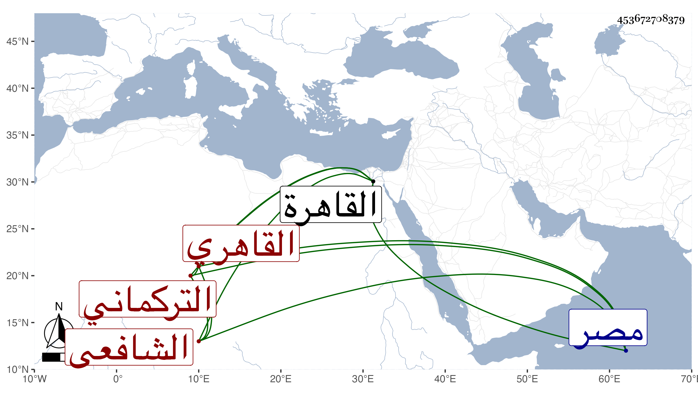

0902Sakhawi.DawLamic.ITO20230111-ara1.EIS1600.453672708379
Biography ID: 453672708379
322
أحمد بن محمد المدعو مظفر بن أبي بكر بن مظفر بن إبراهيم الشهاب التركماني الأصل القاهري الشافعي شقيق عمر الآتي وأمهما تونسية أقامت في صحبة والدهما خمسين سنة لم يختلفا ويعرف بابن مظفر . ولد تقريبا سنة أربع وثمانين وسبعمائة بالقاهرة ونشأ بها فحفظ القرآن وتلاه لأبي عمرو على أبيه والبعض من الشاطبية والمنهاج وقرأ فيه على النور الأدمي واجتمع بالأبناسي الكبير وحضر دروس الأبناسي الصغير وصحب الشهاب أحمد الزاهد ثم الجمال الزيتوني وتكسب في بعض سني الغلاء بسقي الماء وإقراء الأطفال وقتا ، وممن قرأ عنده الشمس محمد بن الغرزوبة ، وانتفع في العزلة والتقلل وكان كثير السياحة يتوجه للقرافة على قدميه لزيارة الشافعي والليث وغيرهما ويتفكر في عجائب المخلوقات متقللا من الدنيا بل متجردا لا يلوي على أهل ولا مال ما علمته تزوج قط إلا قبيل موته فيما قيل لا قصدا للاستمتاع بل للسنة ، وعرض عليه بعد أخيه التكلم له في وظائفه فأبى مؤثرا الانفراد وحب الخمول وعدم الشهرة بل ربما فر من بعض من يقصده للدعاء قانعا باليسير حريصا على مواساة قريبة له لا يعدم عاما يأخذ مالعله يرد عليه مائلا لمخالطة الفقراء ونحوهم ، كل ذلك مع لطف العشرة والتودد والأدب والفصاحة والسمت وحسن التلاوة والصلاة واستحضار أشياء من مقامات الحريري وغيرها من نكت وفوائد ، وللناس فيه اعتقاد ، ولما قدم العلاء البخاري مصر عرضوا عليه أن يؤم به ففعل ثم أعرض عن ذلك لكثرة القاصدين للعلاء وميله للعزله ، وصار بأخرة يبيت بالمنكوتمرية ويؤثرها على غيرها لقلة من يأوي بها فكثرت مجالستي معه بها وصليت خلفه وسمعت قراءته الشجية بل قرأت عليه الفاتحة وسمعت من كلماته النافعة جملة ودعا لي كثيرا وأخبرني بجملة من أحوال أبيه المذكور في سنة تسع وتسعين . مات بالإسهال في يوم السبت ثاني عشر صفر سنة ست وتسعين ودفن من يومه رحمه الله وإيانا .
